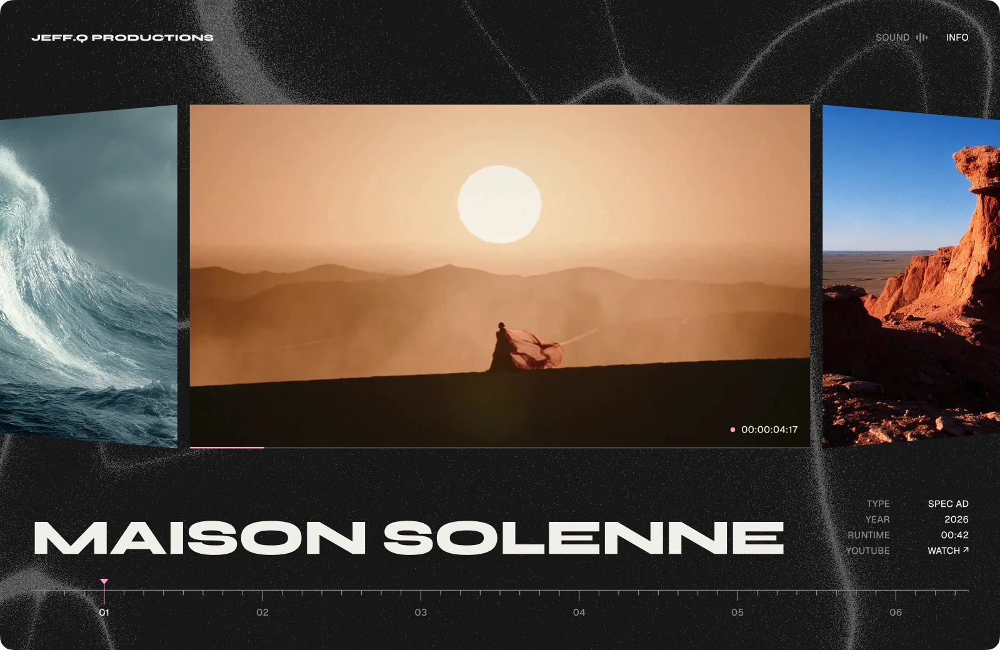
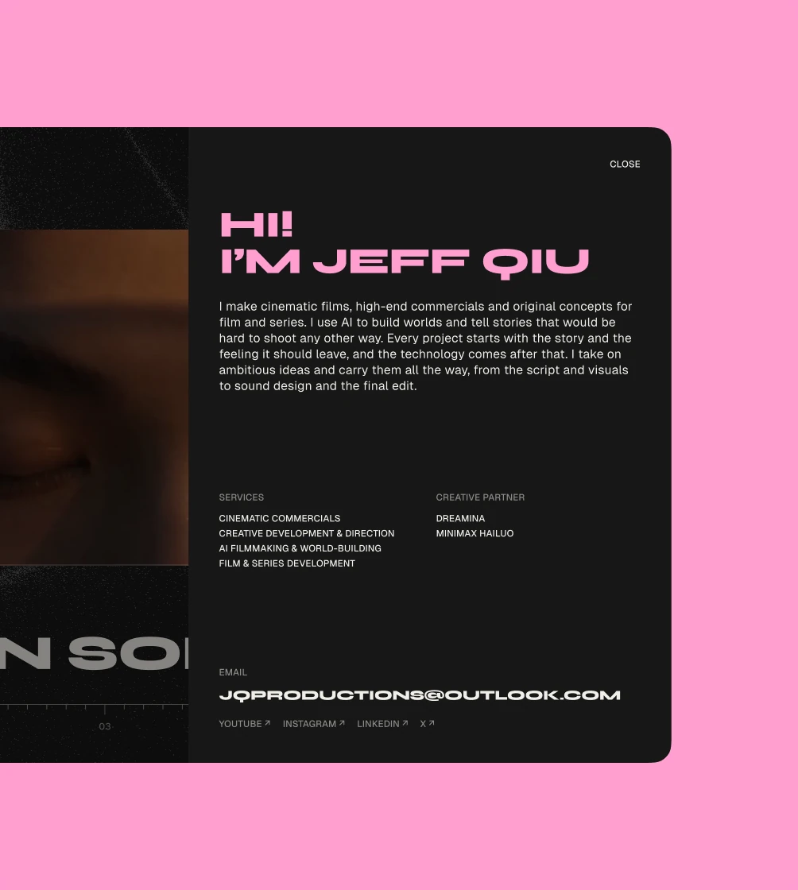
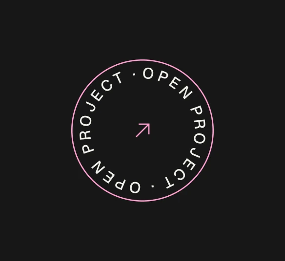
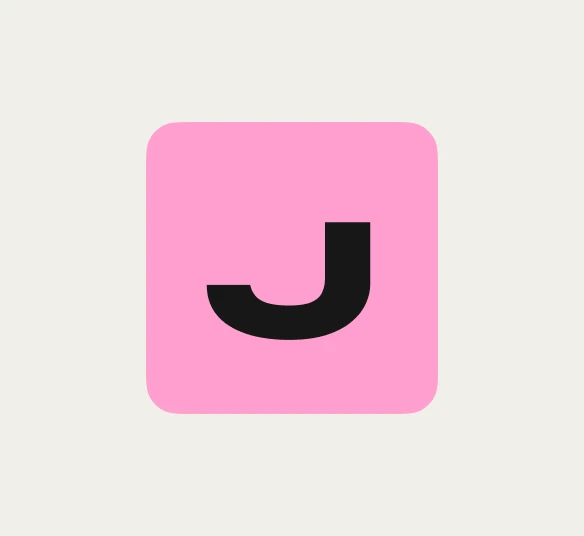
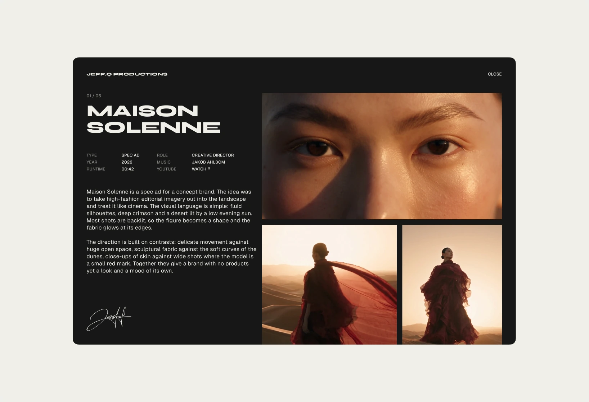
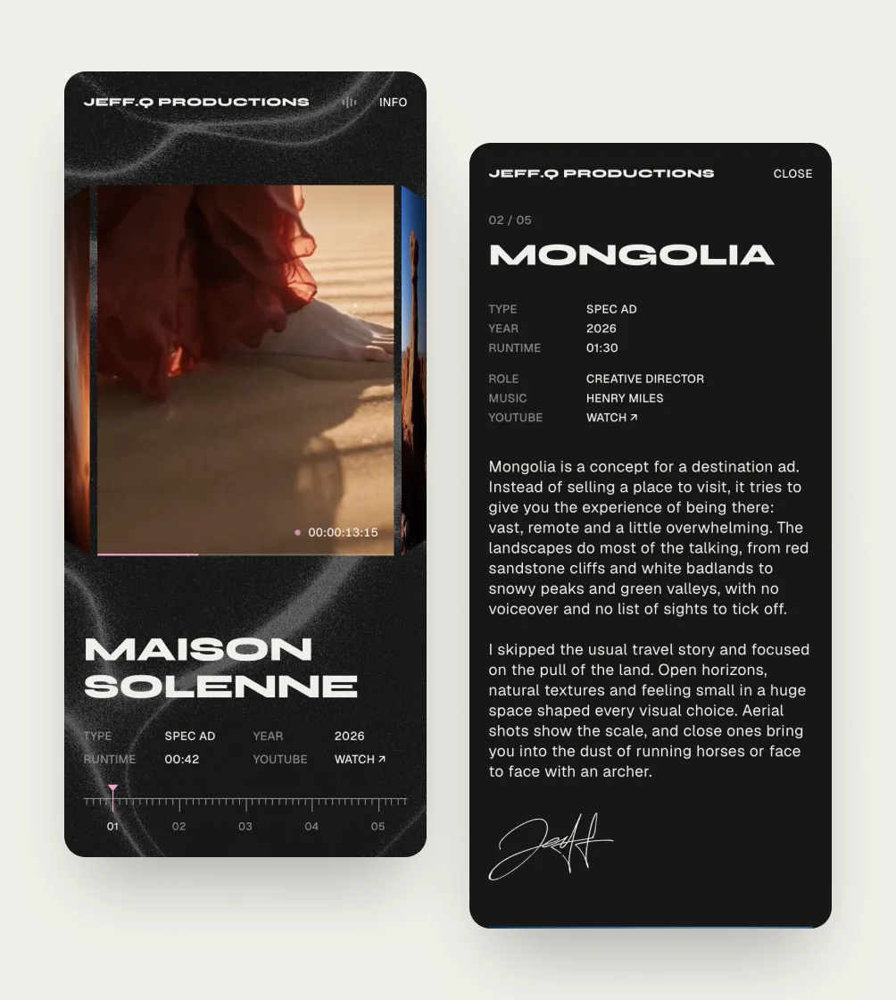
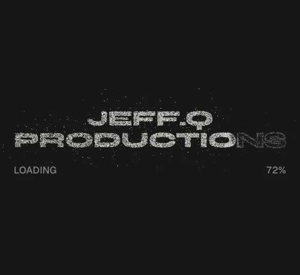
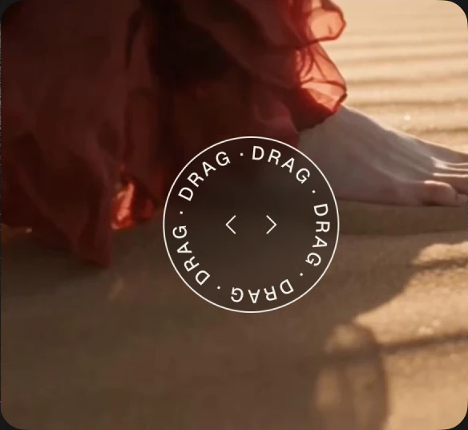

Building a portfolio website for Jeff.Q Productions
- Role
- UI/UX designer
- Scope
- Website design and build
- Year
- 2026
- Live website
- Visit the site

Overview
Jeff.Q Productions is the work of Jeff, a filmmaker and creative director who makes short films and spec ads. Jeff needed one place to show his projects and share with people looking for his services.
As a UI/UX Designer, I was responsible for the whole website, from the first idea to launch. My work focused on presenting each film in a way that feels cinematic, building a clear structure for every project, and making it easy for visitors to get in touch.



Challenge
Jeff’s films were spread across different platforms, so there was no single link he could send to potential clients. He needed a website that showed his work at its best and led people straight to contacting him.
The challenge was to launch the full website without any engineers and without paying for hosting. Everything had to run on a free platform, stay fast with heavy video content, and be easy to update with new films.
At the same time, the website needed to feel like Jeff’s own work, not a template. The goal was a cinematic experience with motion and sound that still loads quickly and works on phones as well as on desktop.
Approach
I started by defining what a visitor needs in the first few seconds: see the films, understand who Jeff is, and know how to reach him. That shaped a simple structure: a film reel on the home page, a dedicated page for every project, and a short info panel with contact details.
The website was designed in Figma screen by screen, from the loader and the 3D film reel to the project pages with the synopsis, credits, stills, and music. Each film plays as a 40-second preview on purpose, so visitors get a taste of the work and reach out for more.
To launch without engineers, I built the website myself with the help of AI coding tools and hosted it for free on GitHub Pages. Videos were compressed and reframed for phones, sound stays off until the visitor turns it on, and every film has its own link and share card, so Jeff can send a single project to a client.

Outcome
Jeff.Q Productions launched as a complete portfolio website that Jeff can share in one link, with every film presented on its own page.
The whole project was delivered with no hosting costs and no engineering team. New films follow the same project structure, so the website can grow together with Jeff’s work.


